컴퓨터응용밀링기능사 (2010-01-31 기출문제)
1과목: 기계재료 및 요소
1. 탄소 공구강 및 일반 공구재료의 구비조건이 아닌 것은?
- 열처리성이 양호할 것
- 내마모성이 클 것
- 고온 경하가 클 것
- 부식성이 클 것
(정답률: 87%)

2. 단위를 단면적에 대한 힘의 크기로 나타내는 것은?
- 응력
- 변형률
- 연신율
- 단면 수축
(정답률: 76%)
3. 스테인리스강을 조직상으로 분류한 것 중 틀린 것은?
- 마텐자이트계
- 오스테나이트계
- 시멘타이트계
- 페라이트계
(정답률: 60%)
4. 다음 그림과 같은 스프링에서 스프링 상수는?(단, k1=3kgf/cm, k2=2kgf/cm, k3=5kgf/cm이다.)
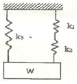
- 8.5 kgf/cm
- 5 kgf/cm
- 6.2 kgf/cm
- 5.83 kgf/cm
(정답률: 43%)
5. 피치 × 나사의 줄 수 = ( )의 공식에서, ( )에 들어갈 적합한 용어는?
- 리드
- 유효지름
- 호칭
- 지름피치
(정답률: 86%)
6. 베어링 합금으로서 구비조건으로 틀린 것은?
- 녹아 붙지 않아야 한다.
- 열전도율이 커야 한다.
- 내식성이 있고 충분한 인성이 있어야 한다.
- 마찰계수가 크고 저항력이 작아야 한다.
(정답률: 67%)
7. 핀의 용도 중 틀린 것은?
- 2개 이상의 부품을 결합하는데 사용
- 나사 및 너트의 이완 방지
- 분해 조립할 부품의 위치 결정
- 핸들을 축에 고정하는 등 큰 힘이 걸리는 부품을 설치 할 때
(정답률: 54%)
8. 알루미늄(Al)에 특성에 관한 설명으로 틀린 것은?(오류 신고가 접수된 문제입니다. 반드시 정답과 해설을 확인하시기 바랍니다.)
- 내식성이 우수하다.
- 합금이 어려운 재료의 특성이 있다.
- 압접이나 단접이 비교적 용이하다.
- 전연성이 우수하고 복잡한 형상의 제품을 만들기 쉽다.
(정답률: 55%)
9. 평 벨트의 이음 방법 중 이음 효율이 가장 좋은 것은?
- 이음쇠 이음
- 가죽꾼 이음
- 철사 이음
- 접착제 이음
(정답률: 52%)
10. 청동에 탈산제인 P를 1% 이하로 첨가하여 용탕의 유동성을 좋게 하고 합금의 경도, 강도가 증가하며 또 내마멸성과 탄성을 개선시킨 것은?
- 망간 청동
- 인 청동
- 알루미늄 청동
- 규소 청동
(정답률: 76%)
11. 동력전달을 직접 전동법과 간접 전동법으로 구분할 때, 직접 전동으로 분류되는 것은?
- 체인 전동
- 벨트 전동
- 마찰자 전동
- 로프 전동
(정답률: 60%)
12. 브레이크의 용량을 결정하는 인자와 관계가 가장 먼 것은?
- 브레이크의 형성
- 브레이크 압력
- 마찰계수
- 드럼의 원주 속도
(정답률: 46%)
13. 주철의 특성에 대한 설명으로 틀린 것은?
- 주조성이 우수하다.
- 내마모성이 우수하다.
- 강보다 탄소함유량이 적다.
- 인장강도보다 압축강도가 크다.
(정답률: 57%)
14. 철강을 열처리하는 목적에 해당하지 않는 것은?
- 일반적으로 조직을 미세화시킨다.
- 내부 응력을 증가시킨다.
- 표면을 경화시킨다.
- 기계적 성질을 향상시킨다.
(정답률: 41%)
15. 열가소성 수지가 아닌 것은?
- 멜라민 수지
- 폴리에틸렌 수지
- 초산비닐 수지
- 폴리염화비닐 수지
(정답률: 53%)
2과목: 기계제도(절삭부분)
16. 기계제도 도면에 사용되는 가는 실선의 용도로 틀린 것은?
- 치수보조선
- 치수선
- 지시선
- 피치선
(정답률: 62%)
17. 실제 길이가 50mm인 것을 "1:2"로 축적하여 그린 도면에서 치수 기입은 얼마로 해야 하는가?
- 25
- 50
- 100
- 150
(정답률: 64%)
18. 30° 사다리꼴 나사의 종류를 표시하는 기호는?
- Rc
- Rp
- RW
- TM
(정답률: 69%)
19. 그림과 같은 입체의 투상도를 제 3각법으로 그린다면 정면도로 맞는 것은?
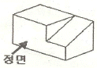
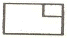
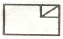
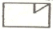
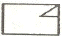
(정답률: 86%)
20. 도면의 표현방법 중에서 스머징(smudging)을 하는 이유는 어떤 경우인가?
- 물체의 표면이 거친 경우
- 물체의 표면을 열처리하고자 하는 경우
- 물체의 단면을 나타내는 경우
- 물체의 특정부위를 비파괴 검사하고자 하는 경우
(정답률: 55%)
21. 형상공차 중 데이텀 기호가 필요 없는 것은?
- 경사도
- 평행도
- 평면도
- 직각도
(정답률: 57%)
22. 그림과 같이 축에 가공되어 있는 키 홈의 형상을 투상한 투상도의 명칭으로 가장 적합한 것은?
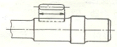
- 회전 투상도
- 국부 투상도
- 부분 확대도
- 대칭 투상도
(정답률: 77%)
23. 기어의 도시법으로 옳은 것은?
- 잇봉우리원 - 굵은 실선
- 피치원 - 가는 2점 쇄선
- 이골원 - 가는 1점 쇄선
- 잇줄 방향 - 파단선
(정답률: 61%)
24. 헐거운 끼워 맞춤인 경우 구멍의 최소 허용치수에서 축의 최대 허용 치수를 뺀 값은?
- 최소 틈새
- 최대 틈새
- 최소 죔새
- 최대 좸새
(정답률: 55%)
25. 가공에서 생긴 줄무늬 방향 기호의 설명으로 틀린 것은?
- = : 가공으로 생긴 컷의 줄무늬 방향이 기호를 기입한 그림의 투영면에 평행
- C : 가공으로 생긴 컷의 줄무늬 방향이 기호를 기입한 그림의 투영면에 직각
- X : 가공으로 생긴 컷의 줄무늬 방향이 기호를 기입한 그림의 투영면에 비스듬하게 두 방향으로 교차
- M : 가공으로 생긴 컷의 줄무늬가 여러 방향으로 교차 또는 무방향
(정답률: 71%)
26. 공작물 통과방식 센터리스 연삭의 특징으로 틀린 것은?
- 긴 홈이 있는 공작물은 연삭할 수 없다.
- 가늘고 긴 공작물은 연삭할 수 없다.
- 공작물의 지름이 크거나 무거운 경우 연삭이 어렵다.
- 연속가공이 가능하며 대량생산에 적합하다.
(정답률: 58%)
27. 아베의 원리에 어긋나는 측정 게이지는?
- 외측 마이크로미터
- 버니어 켈리퍼스
- 다이얼 게이지
- 나사 마이크로미터
(정답률: 42%)
28. 다음 중 래핑(lapping)에 대한 설명으로 틀린 것은?
- 가공면은 윤활성 및 내마모성이 좋다.
- 랩은 원칙적으로 가공물의 경도보다 재질이 강한 것을 사용한다.
- 게이지 블록, 한계 게이지 등의 게이지류 가공에 이용되고 있다.
- 일반적인 작업 방법은 습식 가공 후 건식 가공을 한다.
(정답률: 40%)
29. 선반에서 그림과 같은 가공물의 테이퍼를 가공하려 한다. 심압대의 편위량(e)은 몇 mm인가?(단, D=35mm, d=25mm, L=400mm, l=200mm)
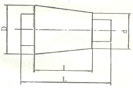
- 5
- 10
- 20
- 40
(정답률: 49%)
30. 연삭 숫돌에 "WAㆍ46ㆍLㆍ6ㆍV"라고 되어 있다면 L이 뜻하는 것은?
- 결합도
- 결합제
- 조직
- 입자
(정답률: 55%)
3과목: 기계공작법
31. 선반에서 바이트의 윗면 경사각에 대한 일반적인 설명으로 틀린 것은?
- 경사각이 크면 절삭성이 양호하다.
- 단단한 피삭재는 경사각을 크게 한다.
- 경사각이 크면 가공 표면거칠기가 양호하다.
- 경사각이 크면 인선강도가 약해진다.
(정답률: 36%)
32. 줄 작업 방법에 대한 설명 중 잘못된 것은?
- 줄 작업 자세는 오른발은 75°정도, 왼발은 30° 정도 바이스 중심을 향해 반우향 한다.
- 오른손 팔꿈치를 옆구리에 밀착시키고 팔꿈치가 줄과 수평이 되게 한다.
- 눈은 항상 가공물을 보며 작업한다.
- 줄을 당길 때 체중을 가하여 압력을 준다.
(정답률: 66%)
33. 다음 설명에 해당되는 공구 재료는?
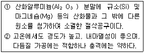
- 탄소 공구강
- 초경합금
- 다이아몬드
- 세라믹
(정답률: 62%)
34. 일반적으로 절삭온도를 측정하는 방법이 아닌 것은?
- 칩의 색깔에 의한 방법
- 열전대에 의한 방법
- 칼로리미터에 의한 방법
- 방사능에 의한 방법
(정답률: 73%)
35. 시준기와 망원경을 조합한 것으로 미소 각도를 측정하는 광학적 측정기는?
- 오토 콜리메이터
- 사인 바
- 콤비네이션 세트
- 측장기
(정답률: 50%)
36. 밀링 작업에서 분할법 종류가 아닌 것은?
- 직접 분할법
- 간접 분할법
- 단식 분할법
- 차동 분할법
(정답률: 55%)
37. 밀링머신에서 절삭량 Q(cm3/min)를 나타내는 식은?(단, 절삭폭:b[mm], 절삭깊이:t[mm], 이송:f[mm/min])
- Q = b×t×f/10
- Q = b×t×f/100
- Q = b×t×f/1000
- Q = b×t×f/10000
(정답률: 65%)
38. 선반에서 주축을 중공축으로 제작하는 가장 큰 이유는?
- 가공물을 지지하여 정밀한 회전을 얻기 위함
- 무게를 감소시키고 긴 재료를 가공하기 위함
- 축에 작용하는 절삭력을 충분히 분산하기 위함
- 나사식, 플랜지식 등의 척을 쉽게 조립하기 위함
(정답률: 35%)
39. 밀링 머신의 부속품에 해당하는 것은?
- 면판
- 방진구
- 맨드릴
- 분할대
(정답률: 64%)
40. 공구가 회전운동과 직선운동을 함께 하면서 절삭하는 공작 기계는?
- 선반
- 셰이퍼
- 브로칭 머신
- 드릴링 머신
(정답률: 53%)
4과목: CNC공작법 및 안전관리
41. 드릴을 시닝(thinning)하는 주된 목적은?
- 절삭 저항을 증대시킨다.
- 날의 강도를 보강해 준다.
- 절삭 효율을 증대 시킨다.
- 드릴의 굽힘을 증대시킨다.
(정답률: 57%)
42. 재질이 연한 금속의 공작물을 가공할 때, 칩과 공구의 윗면 경사면 사이에는 높은 압력과 마찰저항이 크게 생긴다. 이러한 압력과 마찰 저항으로 높은 절삭열의 발생하고, 칩의 일부가 매우 단단하게 변질된다. 이 칩이 공구의 날끝 앞에 달라붙어 절삭날과 같은 작용을 하면서 공작물을 절삭하는 것을 무엇이라 하는가?
- 빌트업 에지
- 가공경화
- 재료의 소성 가공성
- 청열 메짐
(정답률: 70%)
43. 머시닝센터에서 공구를 교환할 때 자동 공구 교환 위치인 제 2 원점으로 복귀할 때 사용되는 G 코드는?
- G27
- G28
- G29
- G30
(정답률: 43%)
44. CNC 선반 프로그램의 공구 기능 T□□△△에서 △△의 의미는?
- 공구선택 번호
- 공구보정 번호
- 공구취소 번호
- 공구교환 번호
(정답률: 66%)
45. CNC공작기계의 일반적인 특징이 아닌 것은?
- 제품의 균일성을 유지할 수 있다.
- 작업자의 피로를 줄일 수 있다.
- 특수공구비가 많이 들어간다.
- 생산성을 향상시킬 수 있다.
(정답률: 73%)
46. 다음은 머시닝센터의 고정사이클 프로그램이다. 내용 설명으로 맞는 것은?
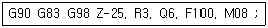
- R3 : 일감의 절삭 깊이
- G98 : 공구의 이송 속도
- G83 : 초기점 복귀 동작
- Q6 : 일감의 1회 절삭 깊이
(정답률: 46%)
47. CNC선반 조작판에서 새로운 프로그램을 작성하고 메모리에 등록된 프로그램을 편집(삽입, 수정, 삭제)할 때 선택하는 모드는?
- MDI(반자동)
- AUTO(자동)
- EDIT(편집)
- MPG(수동펄스 발생기)
(정답률: 80%)
48. CNC선반에서 복합형 고정 사이클 G70 기능으로 정삭가공 할 수 없는 사이클은?
- G71
- G72
- G73
- G74
(정답률: 52%)
49. 그림은 CNC선반 프로그렘에서 P1에서 P2로 진행하는 블록을 나타낸 것이다. ( ) 안에 알맞은 명령어는?
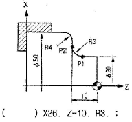
- G01
- G02
- G03
- G04
(정답률: 66%)
50. 다음 그림에서 테이퍼가공을 위한 점 A의 X좌표로 적당한 것은(단, 직경지령 방식으로 한다.)
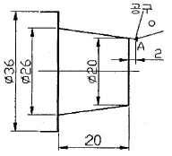
- X18.0
- X18.5
- X19.4
- X19.7
(정답률: 30%)
51. 일반 CNC 공작기계에서 많이 사용되는 그림과 같은 NC서보 기구의 종류는?
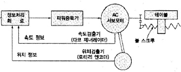
- 개방 회로 방식
- 반폐쇄 회로 방식
- 폐쇄 회로 방식
- 반개방 회로 방식
(정답률: 63%)
52. 머시닝센터의 공구길이 보정과 관련이 없는 것은?
- G40
- G43
- G44
- G49
(정답률: 44%)
53. CAD/CAM 시스템의 입력장치에 해당하는 것은?
- 스캐너
- 플로터
- 프린터
- 모니터(CRT)
(정답률: 49%)
54. CNC기계의 일상 점검 중 매일 점검해야 할 사항은?
- 유량 점검
- 각부의 필터(Filter) 점검
- 기계정도 검사
- 기계 레벨(수평) 점검
(정답률: 57%)
55. 1000rpm으로 회전하는 주축에서 2회전 일시 정지 프로그램을 할 때 맞는 것은?
- G04 X1.2 ;
- G04 W120 '
- G04 U1.2 ;
- G04 P120 ;
(정답률: 42%)
56. CNC선반 가공시 주의 사항으로 틀린 내용은?
- 나사 가공 중에는 이동 정지 버튼을 누르지 않는다.
- 절삭 칩의 제거는 반드시 청소용 솔이나 브러시를 이용 한다.
- 홈 바이트로 절단을 할 때에는 좌우로 이동하면서 절단 한다.
- 기계의 전원을 켜기 전에는 각종 버튼과 스위치의 위치를 확인한다.
(정답률: 67%)
57. CNC선반 프로그램에서 절대값 지령 방법과 증분값 지령 방법에 대한 설명으로 틀린 것은?
- 절대값 지령은 이동지령의 위치를 절대 좌표계의 위치로 지령하며, 지령하는 좌표에는 X, Z를 사용한다.
- 증분값 지령은 이동 시작점부터 종점까지의 이동량으로 지령하며, 지령하는 좌표에는 U, W를 사용한다.
- 한 개의 지령절(block)내에서 두 가지 방법을 같이 쓸 수 있다.
- 한 개의 지령절(block)내에서 X와 U 또는 W와 Z가 같이 사용되었을 때는 모두 유효하다.
(정답률: 39%)
58. CNC 선반 프로그램에서 G50 이 의미하는 것은?
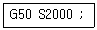
- 기계 원점 복귀
- 최고 회전수 지정
- 절삭속도 일정제어
- 공구보정
(정답률: 67%)
59. 선반작업을 할 때 안전사항으로 맞는 것은?
- 바이트는 가능한 길게 물린다.
- 손 보호를 위하여 면장갑을 착용한다.
- 보호안경을 착용한다.
- 선반을 멈추게 할 때는 역회전시켜 멈추게 한다.
(정답률: 71%)
60. CNC 선반에서 홈이나 나사를 가공할 때 회전수를 일정하게 제어하는 기능은?
- G94
- G95
- G96
- G97
(정답률: 47%)
설명: 탄소 공구강 및 일반 공구재료는 고온에서 사용되는 경우가 많기 때문에 열처리성이 양호해야 하며, 고온 경하가 클 것이 중요합니다. 또한 부식성이 클 경우 오랜 사용에 따라 부식이 발생하여 공구의 수명이 단축될 수 있습니다. 하지만 내마모성이 클 경우에는 마모가 적어지기 때문에 오히려 좋은 특성입니다.